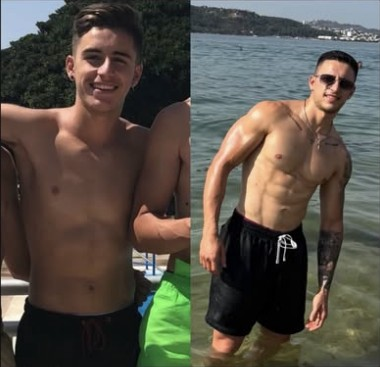
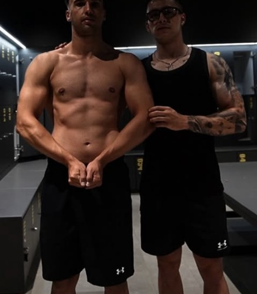
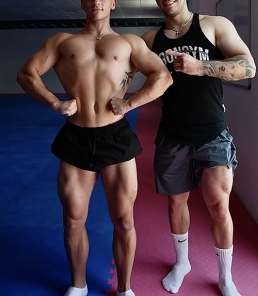

Trabajo, horarios, pareja, hijos, cenas. Te ayudo a recuperar tu físico y tu energía con un plan que cabe en tu semana real, sin vivir a dieta.
3–5 minutos: por qué la vida adulta te sacó de forma y cómo vuelves.
No es falta de ganas. Es que ningún plan estaba hecho para tu semana. Por eso cada lunes empiezas de cero.
El plan se construye sobre tu horario real: turnos, niños, viajes. 3–4 entrenos que caben.
Orden, cargas apuntadas y progresión. Menos días, mejor hechos.
Lo que se cocina en tu casa y cenas fuera incluidas. Pesas 4 semanas y luego a ojo.
Vuelves a tener rutina y llegan los primeros cambios en cintura y báscula.
Pierdes grasa y ganas fuerza a la vez. La ropa empieza a sentarte distinto.
Comes a ojo, mantienes y lo sostienes sin depender de mí.

Soy Carlos. Empecé con 58 kg, sin idea de pesas, copiando la rutina de un amigo. Entrené años "mucho y mal", lo dejé, volví, me tocó parar otra vez… y cada vuelta aprendí algo que hoy aplico con mis clientes.
Fotos y datos con permiso de cada cliente. [pendiente de Carlos]
6 meses perdiendo grasa y después +5 kg de músculo. Desde cero y con hábitos "súper malos".

Punto de partida, tiempo y resultado del cliente de la foto.

Punto de partida, tiempo y resultado del cliente de la foto.
“[Testimonio literal de un cliente con trabajo y poco tiempo]”
pendiente“[Testimonio literal: qué cambió en su energía y su ropa]”
pendiente2 minutos. Lo leo yo.
Vemos tu horario, tu punto de partida y si encajas.
Tu primer entreno y tu pauta, montados sobre tu semana.
Entre 3 y 4, según tu semana. Y si una semana se tuerce, tienes una sesión mínima de 30 minutos.
No. Solo las 4 primeras semanas, para que aprendas tus raciones. Después, a ojo.
Sí. Te enseño qué pedir y cómo encajarlo en la semana.
Mejor: el plan se monta sobre tus turnos, no al revés.
Sí, 1:1 por app y WhatsApp, con revisión semanal. [confirmar si también presencial]
Rellena esto y te escribo por WhatsApp en menos de 24 horas.